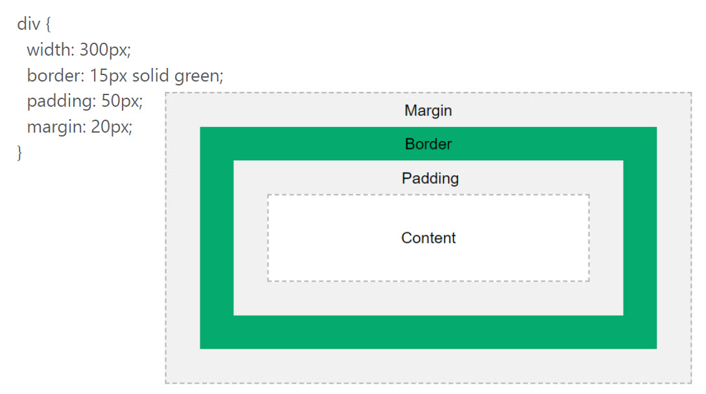

Hoje vamos fazer:
- Borders e Sombras
- Box Model
- selectores CSS
- Falar de acessibilidade
- HTML Responsivo
Borders:
- border-style: dotted ; dashed ; solid ; double ; groove ; ridge ; inset ; outset ; none ; hidden
- border-color:
- border-width:
- border-left:
- border-radius
Shadows
- box-shadow:
- text-shadow:
Box Model
Acessibilidade é um tópico crucial para todos os que desenvolvem componentes para a web.
Cerca de 15% da população é portadora de algum tipo de deficiência, o que se traduz em 1 bilião de pessoas em todo o mundo.
o selector :focus
Refere-se a selecionar um elemento HTML e direccionar todos os eventos do teclado ao elemento selecionado.
Navegação:
tab ou shift + tabNa sintaxe do CSS:
:focus {
css declarations;
}
Selectores de CSS
.class // .banner
Seleciona todos os elementos com a class="banner"
#id // #navegacao1
Seleciona todos os elementos com a id="navegacao1"
*
Seleciona todos os elementos
p
Seleciona todos os elementos <p>
p, div, .class
Seleciona todos os elementos <p>, divs e class
div, p, .class {
}
Seleciona todos os elementos <p>, divs e class
div p {
}
Seleciona todos os elementos <p>, dentro de elementos div
div > p {
}
Seleciona todos os elementos <p>, que o "pai" seja uma div
div + p {
}
Seleciona todos os elementos <p>, que estão imediatamente a seguir a uma div
p ~ ul {
}
Seleciona todos os elementos <ul>, que estão precedidos por uma tag <p>
[atributo] // [target]
Seleciona todos os elementos com um atributo target, tag <a> por exemplo
[atributo=valor]
[target=_blank] {
}
[title=flower] {
}
:active // a:active {}
selectiona o link activo
:visited // a:visited {}
selectiona o link previamente visitado
::after e ::before
p::before {}
Insere alguma coisa antes ou depois do elemento
:focus
Seleciona o elemento que tem focus
:hover
Seleciona o elemento quando o rato está por cima
Elementos inline
- Respeitam as margins e padings à esquerda e direita mas não no top e bottom
- Não podem ter width e height definidos
- Deixam existir elementos à esquerda e direita
Elementos Block
- Respeitam as margens todas
- força uma nova linha
- Fica com a largura máxima se não tivermos definido
Elementos Inline-block
- Outros elementos podem existir à esquerda e direita
- Respeitam margens top e bottom
- Respeitam height e width